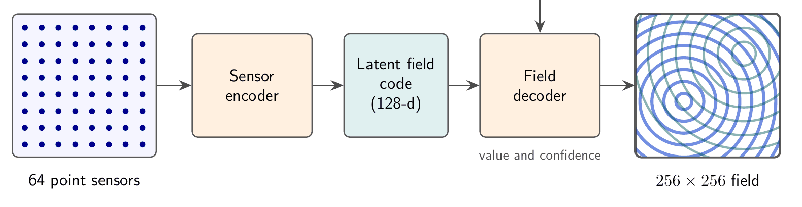
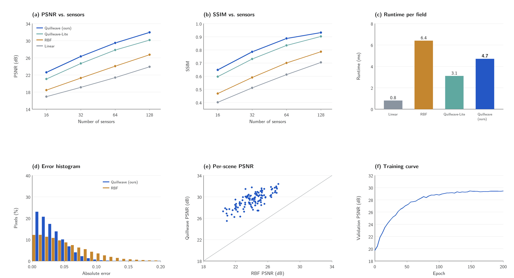

Abstract
Quillwave reconstructs a full 256×256 ripple field from 64 point sensors. Ripple fields are procedurally generated sums of interfering circular waves: cheap to synthesise, but hard to interpolate, because the wave fronts between sensors are lost by smooth interpolation. Quillwave encodes the sensor readings into a 128-dimensional latent field code and decodes it with a coordinate-based field decoder. On RippleBench-Synthetic, a benchmark of 500 synthetic test fields generated for this work, Quillwave reaches 29.46 dB PSNR and 0.887 SSIM, 5.41 dB above radial-basis interpolation (the best baseline), which is a 71.2% lower mean squared error. It is also 1.36× faster than radial-basis interpolation at inference. All results are on synthetic fields only.
Video
Transcript
The video has no speech; these are its on-screen captions.
- [00:06] The task: recover a full 256×256 ripple field from only 64 point sensors.
- [00:10] Simple interpolation blurs the wave fronts between the sensors.
- [00:14] Quillwave encodes the sensor readings into a compact latent field code.
- [00:19] A field decoder then predicts a value and a confidence at every pixel.
- [00:24] Linear interpolation of the sensors, compared with Quillwave.
- [00:28] The wave fronts stay sharp as the sources move.
- [00:32] On RippleBench-Synthetic, Quillwave reaches 29.46 dB PSNR.
- [00:35] That is 5.41 dB above radial-basis interpolation.
- [00:39] Limitations: all results are on synthetic fields only.
- [00:42] The baselines are not compute-matched, and the confidence map is not calibrated.
Method

The sensor readings sit on a regular 8×8 grid. Each sensor contributes a token made of its position and reading; a small set-encoder with shared weights and attention pooling maps the tokens to the latent field code, so the code does not depend on the order in which sensors are listed. The coordinate-based decoder takes a pixel position, encoded with sinusoidal features, together with the code, and predicts the field value and a per-pixel confidence. The confidence head is trained to rank pixels by error; it shows where the reconstruction is least reliable, not how reliable it is.
Quillwave-Lite is the ablation that removes the latent code and conditions the decoder on the raw readings. The full model has 1.2M parameters and is trained for 200 epochs on 2000 synthetic fields (about 3.5 GPU-hours).
Live Dashboard
The project has two parts: the training and evaluation system, and a web dashboard that shows live reconstructions from a simulated sensor array. The dashboard streams a new synthetic field every few seconds, samples it at the sensor positions, and shows the reconstruction next to the ground truth. Its views cover the live reconstruction, per-sensor readings over time, reconstruction metrics and the sensor-count and decoder settings. The dashboard has been run on simulated data only.
Results
All results are on RippleBench-Synthetic: 2000 training and 500 test fields of 256×256 damped circular waves from up to four random sources. Learned models are trained 5 times with different seeds and we report the mean. Quillwave reaches 29.46 dB PSNR and 0.887 SSIM with 64 sensors, 5.41 dB above radial-basis interpolation, the best baseline (a 71.2% reduction in mean squared error). At 4.7 ms per field it is 1.36× faster than radial-basis interpolation (6.4 ms), though slower than linear interpolation (0.8 ms). Quillwave-Lite reaches 27.82 dB, so the latent field code accounts for part of the gain. Quillwave is the best method at every sensor count tested.
Table 1. Reconstruction quality on RippleBench-Synthetic (64 sensors, 256×256 fields, mean over 5 training runs). Higher PSNR/SSIM is better; lower runtime is better.
| Method | PSNR (dB) | SSIM | Runtime (ms) |
|---|---|---|---|
| Linear interpolation | 21.37 | 0.612 | 0.8 |
| Radial-basis interpolation | 24.05 | 0.701 | 6.4 |
| Quillwave-Lite (ablation) | 27.82 | 0.834 | 3.1 |
| Quillwave (ours) | 29.46 | 0.887 | 4.7 |
Table 2. PSNR (dB) on RippleBench-Synthetic as the number of sensors changes (256×256 fields).
| Method | 16 sensors | 32 sensors | 64 sensors | 128 sensors |
|---|---|---|---|---|
| Linear interpolation | 16.92 | 19.10 | 21.37 | 23.88 |
| Radial-basis interpolation | 18.44 | 21.26 | 24.05 | 26.71 |
| Quillwave-Lite (ablation) | 21.03 | 24.67 | 27.82 | 30.15 |
| Quillwave (ours) | 22.58 | 26.31 | 29.46 | 31.94 |


Failure cases. Quillwave is least accurate where two wave sources lie close together between the same group of sensors: the interference pattern then varies faster than the sensor spacing, and the decoder tends to merge the two sources into one. Radial-basis interpolation fails in the same places, but more smoothly. Near the border of the field, where sensors are present only on one side, all methods lose accuracy.
User study. A small study with 20 participants rated side-by-side comparison videos. Mean ease of use was 4.10 and mean perceived quality 3.90, each out of 5. Raw responses are not published.
Limitations
- Baselines are not compute-matched. Quillwave is trained for 3.5 GPU-hours, while the interpolation baselines need no training at all.
- Synthetic fields only. Every result is on RippleBench-Synthetic; no real sensor data was used, and behaviour on real measurements is unknown.
- Confidence is not calibration. The per-pixel confidence map has not been checked against observed error rates, so it should not be read as a calibrated probability.
Future work includes testing on real sensor data and calibrating the confidence map.
Acknowledgments
We thank our supervisor, Dr. Dana Specimen, for weekly guidance, and the Department of Imaginary Sciences for computing time. We also thank the 20 participants of our user study.
BibTeX
@misc{placeholder2026quillwave,
title = {Quillwave: Sparse-Sensor Reconstruction of Synthetic Ripple Fields},
author = {Ada Placeholder and Ben Example and Cleo Sample},
howpublished = {Final Year Project Report, Example University (fictional), Department of Imaginary Sciences},
year = {2026},
note = {Fictional entry for testing}
}